Навчившись мистецтву ліплення з мастики, буде нескладно створити в домашніх умовах справжній шедевр і красиво доповнити будь-який десерт. Подивіться, як виготовляється заєць з мастики покроково, щоб приємно порадувати дитину і гостей на свято. За допомогою такої фігурки вдасться прикрасити паску, тістечко або дитячий торт.
Що знадобиться
Перед тим як зробити зайчика, потрібно взяти такі інгредієнти і пристосування:
- мастику (домашню або покупну);
- стеки для мастики;
- харчової клей або воду;
- пару вермішелін або зубочисток.
Спосіб №1 ліпки зайця з мастики
Для того щоб виліпити казкового персонажа, потрібно взяти цукрову мастику білого, блакитного, насиченого і світлого рожевого кольору. Перегляд покрокового МК по темі спростить завдання.
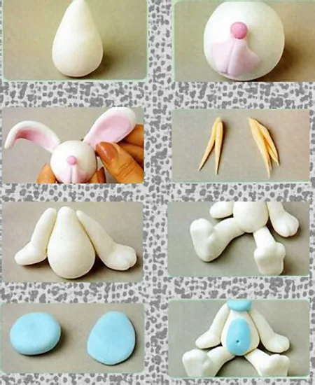
- Ось як слід почати: відокремити від основного шматка білої мастики більшу частину під тулуб тварини. Ця частина тіла повинна вийти грушоподібної форми.
- З основної частини мастики відірвати невелику частину під голову. Надати їй круглу форму. З насичено-рожевої мастики зробити носик-ґудзик. За допомогою стека вирізати фрагмент в формі щічок зі світло-рожевої маси і продавити посередині борозну. Додати очі – невеликі кульки з чорної мастики. Приклеїти деталі за допомогою води, яєчного білка або харчового клею.
- Зліпити довгасті вуха. Зайка буде особливо симпатичним, якщо перед тим як зігнути вуха, посередині зробити рожеві вставки з мастики. Після цього потрібно приклеїти деталі до голови.
Порада!
Підготуйте кілька зубочисток або пару довгих вермішелін. З їх допомогою вийде надійно прикріпити основні деталі до тулуба.
- Зліпити довгасті передні і задні лапи. Злегка загнути їх всередину і промальовувати стеком пальчики. Зайка буде досить милим. Увіткнути одну частину вермішеліни або зубочистки в тулуб, а до іншої приєднати передні лапи тварини.
- Таким же простим чином прикріпити задні лапи.
- З блакитний мастики, як показується в уроці на 7 фото, зліпити коло із приплюснутої кулі і тонкий овал.
- В кінці потрібно за допомогою води або клею приєднати овал до тулуба, зробивши животик. Коло приєднати до нижньої частини голови у вигляді комірця перед тим, як прикріпити її. За допомогою стека вийде прикрасити фігурку, зробивши акуратний пупок.
Подивіться відео, як ліпити зайця з мастики:
Приклади оформлення тортів
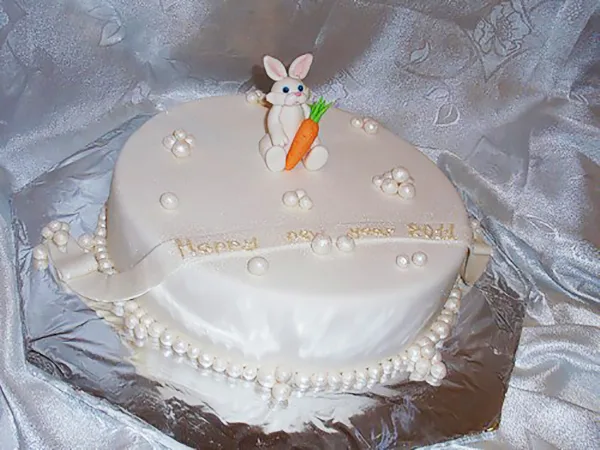
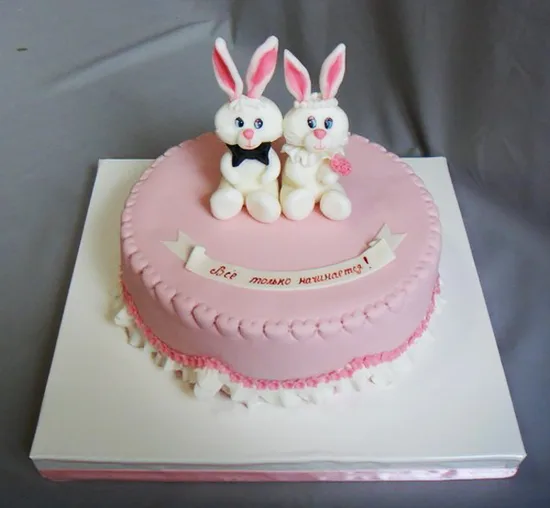
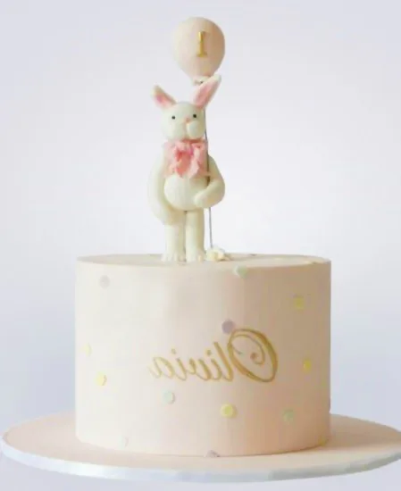
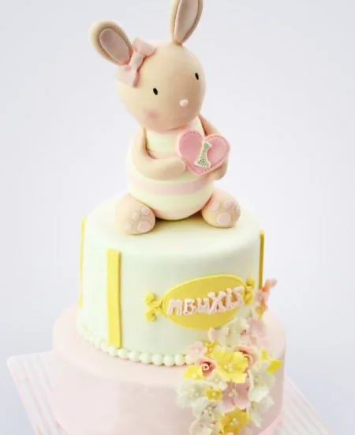
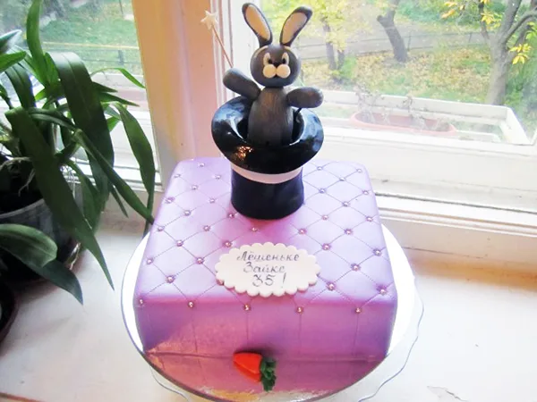
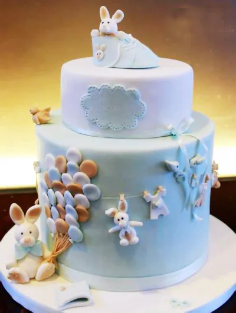
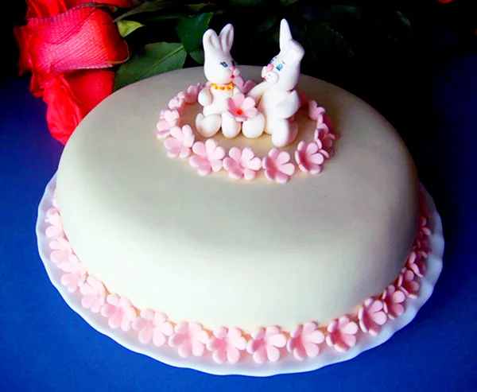
Спосіб №2
За допомогою покрокової інструкції з фото буде просто зробити зайчика ще одним способом. Детальний опис по темі швидко навчить робити фігурку, щоб почати вже сьогодні.
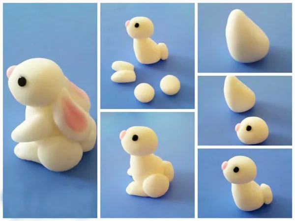
- Заєць з мастики в майстер-класі №2 робиться за такою схемою. Перед тим як зліпити фігурку, потрібно підготувати всі основні деталі. З мастики білого кольору скачайте великий трикутник у формі тулуба.
- Голова повинна вийти в формі овалу. З чорної мастики потрібно підготувати очки-намистинки, а з рожевої – маленький круг у формі носа. Всі елементи приєднуються за допомогою харчового клею, яєчного білка або води.
- Якщо переглянути фото, то легко зрозуміти, як зробити лапи фігурки. Вони повинні бути довгастими. Ще потрібно зліпити два кружечка, які будуть виконувати функцію сідничок зайчика.
- На заключному етапі потрібно доповнити прикрасу вушками. Вони повинні бути довгастої овальної форми і лягати на спину зайчику. В серединку потрібно приклеїти по шматочку рожевої мастики. За допомогою стека зробіть посередині вушок акуратну ямку.
- Залишилося приклеїти вушка і кружок хвоста – фігурка готова!
Приклади тортів
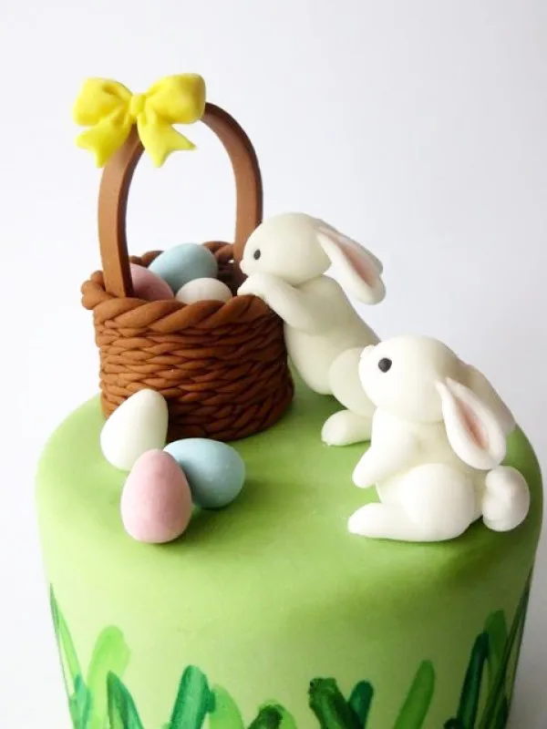
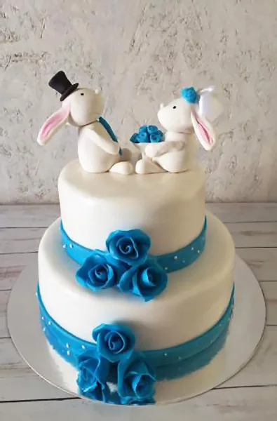
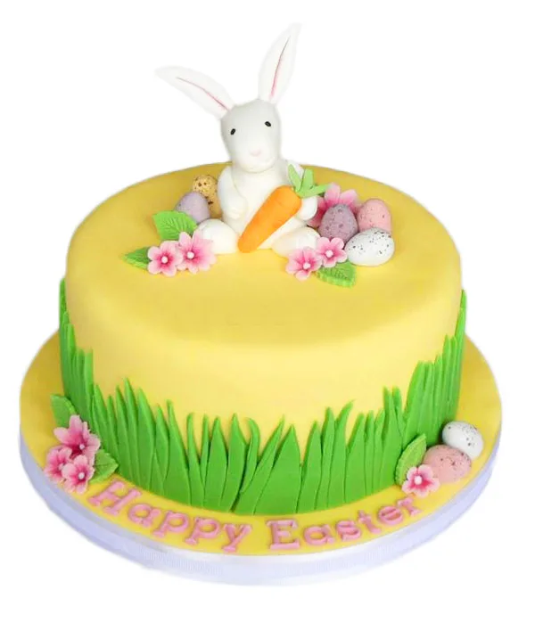
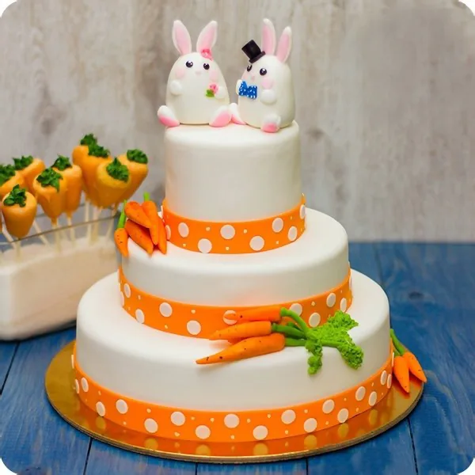
Важливо!
Вибравши на сайті Тортопедії підходящий варіант виготовлення зайчика своїми руками, не потрібно забувати ось що. Перед тим як встановити фігурку на торт або паску на Великдень, їй потрібно дати час підсохнути. За схожою схемою можна зробити і інші фігурки, красиво доповнивши десерт.